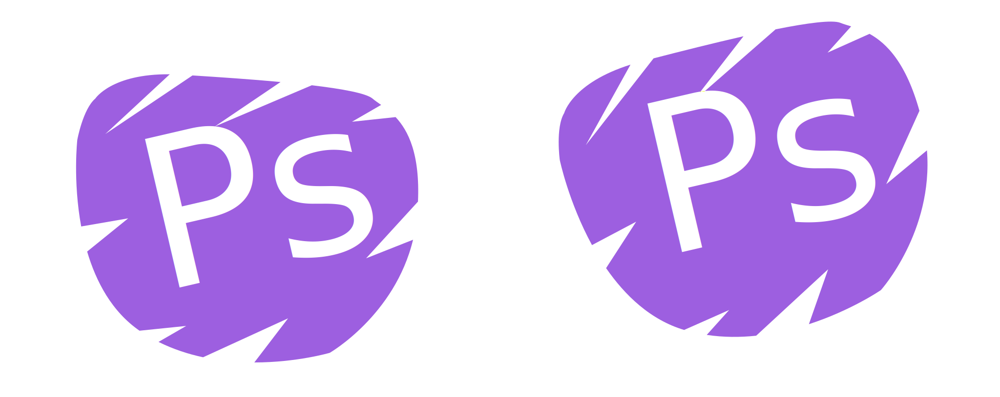
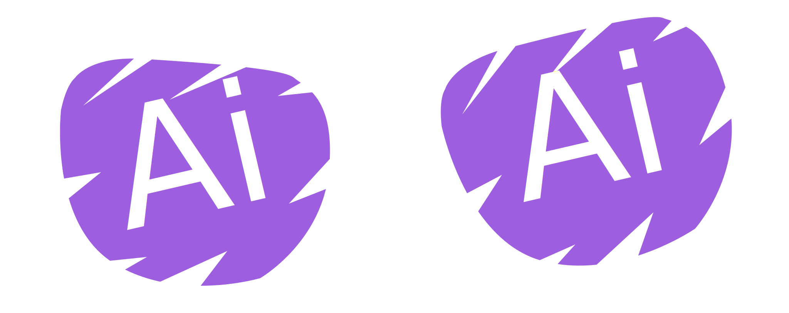
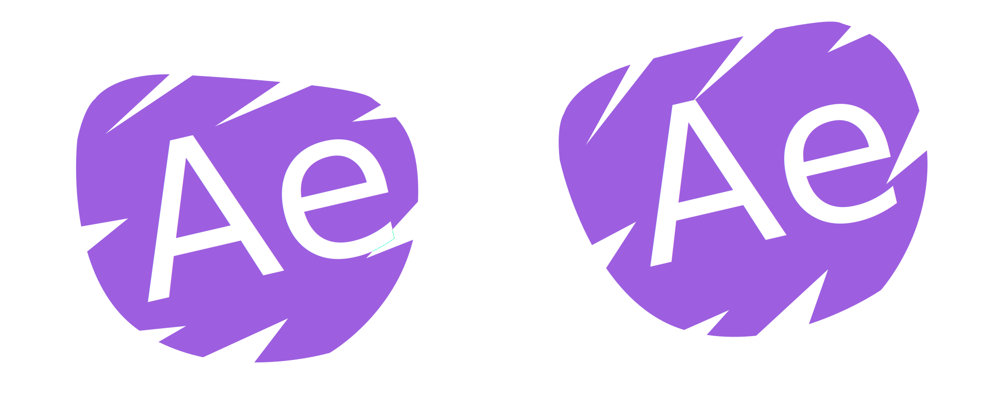
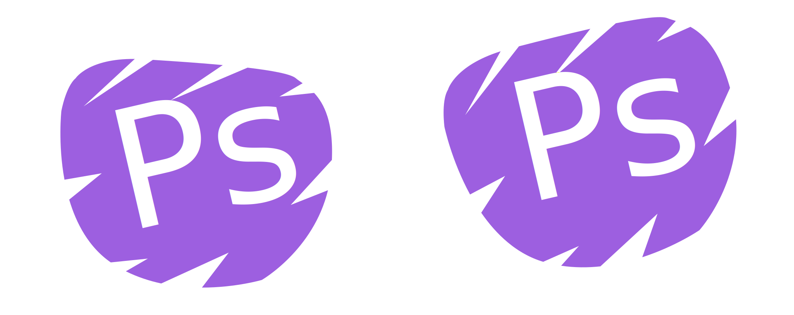
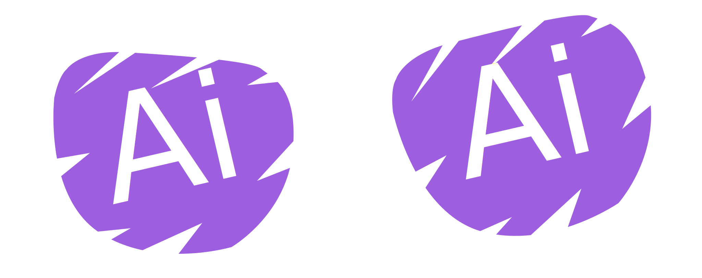
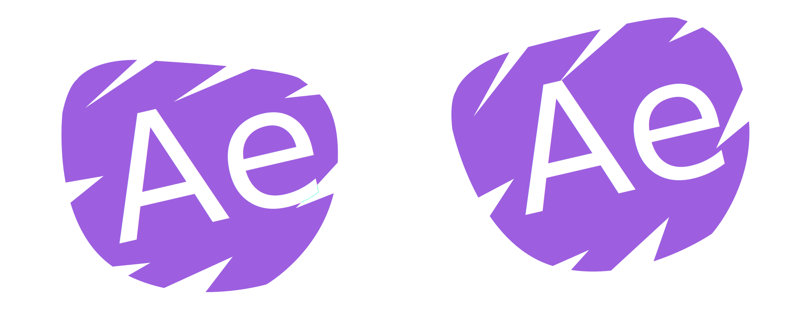

Welcome to the portfolio of Steve Bickram, Canadian Graphic Designer, adventurer, and renaissance man extraordinaire! With a diverse background and wealth of life experience, I bring a creative perspective to graphic design. I find myself to be a very resourceful problem solver. I take great pride in finding very unique solutions to both design and in life. As a person who is constantly trying to improve, I am never quite happy with my work. I constantly look back on my projects and want to apply my newest skills. For this reason, the collection in this portfolio is work which has recieved the acknowledgement from my peers as well as projects which I really enjoyed working on.